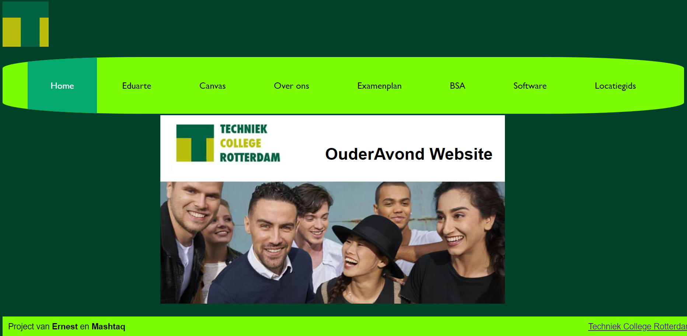
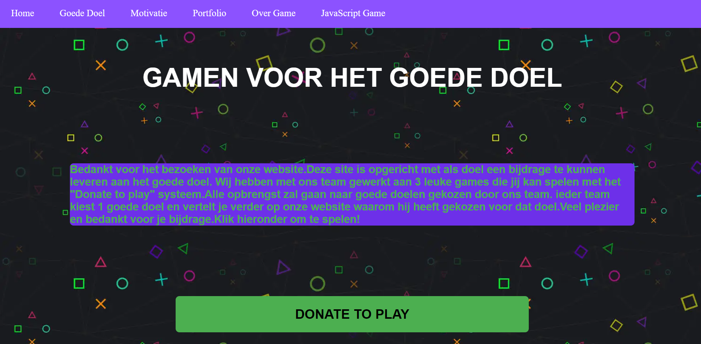
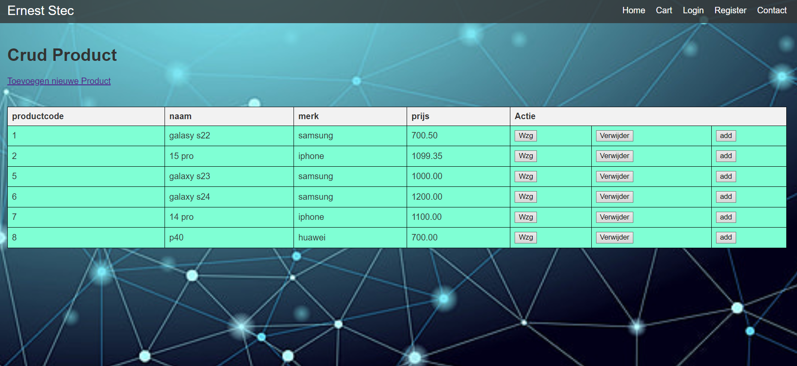
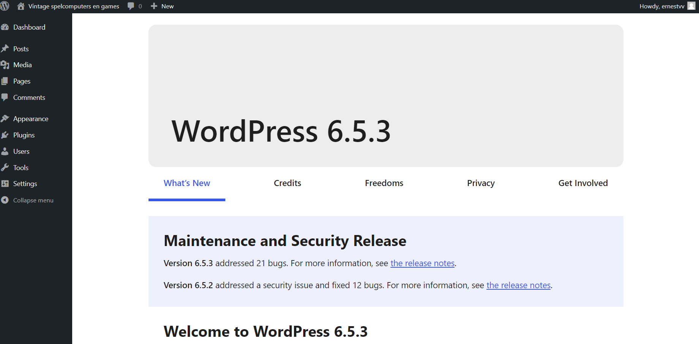

Mijn Opleiding
Software Developer MBO4
Ik zit nu in MBO4 bij eerste jaar ICT klas Software Developer in Techniek College Rotterdam. Op deze opleiding ben ik bezig met verschillende soorten programmer talen zoals: HTML, CSS, JAVA, PHP, MYSQL. We leren niet alleen programmeren maar ook ontwerpen en plannen zoals wireframes maken of scrum plan. Deze opleiding duurt 3 tot 4 jaar en tweede jaar start ik met stage die ik ga volgen ongeveer 5 maanden.
Vroegere scholen/opleidingen
Basisschool in Polen: 2010-2017
Hugo de Groot, Rotterdam: 2018-2020
Rvc de Hef, Rotterdam: 2020-2023
Techniek College Rotterdam: 2023-nu
Projecten
We hebben tijdens eerste opleiding jaar 4 projecten (tot nu 3 gedaan):
Oudersavond website - Het was ons eerste project en we moesten html en css gebruiken om een website voor ouders te maken met alle informatie over onze school
Goede doel website - Bij het tweede project moesten we ook een website maken, maar deze keer voor een geselecteerd nobel doel en ieder van ons moest zijn eigen spel maken met behulp van javascript
Webshop website - Bij het derde project moesten we individueel onze eigen online winkel creëren met behulp van PHP en MYSQL, waarin producten te koop zouden zijn, samen met een inlogsysteem en een winkelwagentje
Wordpress website - Ons laatste project dit schooljaar is het maken van een website met behulp van het WordPress-systeem, het thema is ook een online winkel
   